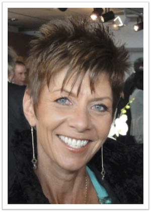
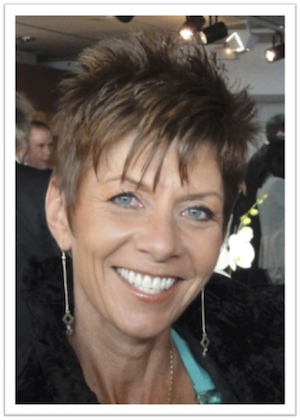
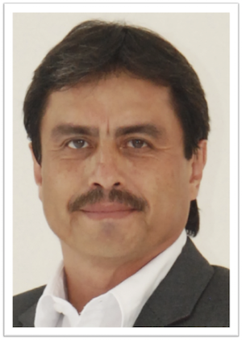
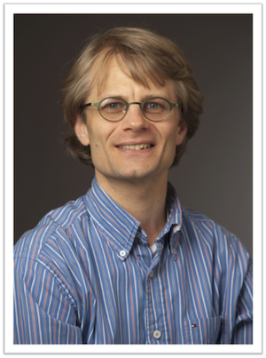
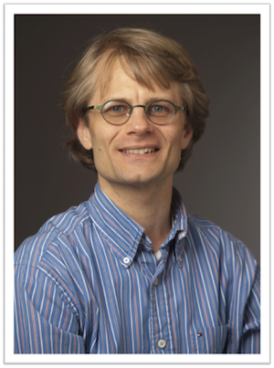
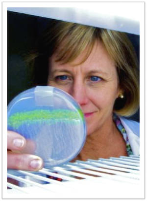
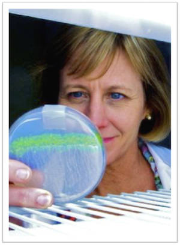

Speaker Biographies
Jill Farrant
 

Jill Farrant is a full Professor and holds a South African Research Chair in “Systems Biology Studies on Plant Desiccation Tolerance for Food Security” in the Department of Molecular and Cell Biology, University of Cape Town. She is an acknowledged world leader in the field of plant desiccation tolerance (holding a rarely given A rated status by the South African National Research Foundation), working on both seeds and resurrection plants. Her fundamental research involves use of a systems biology approach (using techniques in molecular biology, biochemistry, cell biology and physiology) to understand the protection mechanisms (and regulation thereof) laid down in orthodox seeds and vegetative tissue of resurrection plants, with the ultimate aim of using key protectants identified to make drought tolerant crops. She has received considerable recognition for her research, having achieved 10 national and international awards, the most recent being the L’Oreal-UNESCO award in life sciences (2012) that ‘recognizes women whose exceptional careers in science have opened up new and sometimes revolutionary ways of improving human well-being’ and the EPFL WISH Foundation Erma Hamburger award for ‘ground breaking work in phytology and being a exceptional role model to plant biologists world wide’. Jill has graduated 32 MSc organizers and 19 PhD organizers during the 22 years she has been an academic.
Luis Herrera Estrella

Dr. Luis Herrera Estrella, a pioneer and leading expert on genetic engineering, received a Ph.D. in plant molecular biology from the State University of Ghent, Belgium, where he also conducted postgraduate research.
His current research is focused on the study of the molecular mechanisms that regulate the development of plant roots in response to environmental factors and in the field of functional genomics of several endemic species of Mexico.
He is a Howard Hughes Distinguished Fellow, and a member of US National Academy of Sciences. Dr. Herrera has received the Distinguished Graduate Research Award by the New York Academy of Sciences, Javed Husain award by UNESCO, Gold Medal by WIPO (World Intellectual Property Organization), etc.
Dr.Herrera Estrella has graduated many students under his direction, such as: 17 BSc, 13 MSc, and 34 PhD. His research has generated 5 patents and more than 200 publications in international journals and books which have received more than 8,500 citations.
He recently created the company called StelaGenomics, which is dedicated to the development of genetically modified crops designed to reduce the use of fertilizers and agrochemicals in agriculture.
In 2015 Dr. Herrera Estrella was elected Honorary Professor by Nanjing Agricultural University and the Magazine of Science “Scientific American” elected him as one of the 100 most influential people in biotechnology. Currently, he is the Director and Full Professor of the National Laboratory of Genomics for Biodiversity.
Jean-Luc Jannink
 

Jean-Luc Jannink's primary focus is on developing statistical methods to use DNA markers in public sector small grains breeding. He has been a pioneer in the study and application of genomic prediction to plant breeding. Genomic prediction uses genome-wide DNA markers and phenotypes from breeding trials to train prediction models that can accelerate and improve selection of high value parents to advance in a breeding program. In addition to working on these methods in small grains, he now has a substantial effort in cassava, an outcrossing clonally propagated crop that is key to food security in Sub-Saharan Africa.
Luca Comai


Dr. Comai's lab is involved in two areas pertinent to breeding. In the first, they study genome regulation, hybridization, and heterosis responses in chromosome copy number variants and interspecific hybridization. In the second, they develop and make available to the plant community a functional genomic discovery tool called TILLING that allows targeted inactivation of genes in crop plants. The research combines plant genetics and genomics with the use of next-generation sequencing and bioinformatics to identify genes responsible for traits of interest as well as to discover and use natural and induced variation.
Julia Bailey-Serres
 

Dr. Julia Bailey-Serres is a professor in the Department of Botany and Plant Sciences and the Director of the Center for Plant Cell Biology at the University of California, Riverside. Her recognitions include the USDA National Research Initiative Discovery Award for Outstanding Agricultural Research to Enhance Submergence Tolerance in Rice, fellow of the American Association for the Advancement of Science, and fellow of the American Society of Plant Biologists. Her group studies plant responses to extremes in water availability, particularly flooding and the accompanying low oxygen stress, from the molecular to the whole plant level. Her group has dissected the multiple roles of the SUB1A gene in conferring tolerance to temporary submergence in rice and pioneered methods that enable study of gene activity in specific cell types of complex tissues.
Renee Lafitte

Renee Lafitte works at the interface of crop ecophysiology and crop improvement, with the goal of improving the resilience of crops and cropping systems to abiotic stress. She received a M.Sc. in Agronomy and Ph.D in Crop Physiology from the University of California, Davis. Renee began field phenotyping for stress tolerance in 1985 at the International Center for Maize and Wheat Improvement (CIMMYT) in Mexico. There, she supported drought breeding activities using managed environments. She also established screening systems for improving tolerance to low nitrogen in maize, and developed and delivered courses in on-farm research for breeders and agronomists from partner countries in Latin America, Africa, and Asia. In 1995, she was employed at the International Rice Research Institute (IRRI) in the Philippines. At IRRI, she was responsible for field-based phenotyping to assess genetic variation in drought response in rice, including approaches of QTL analysis, gene expression profiling, controlled environment screening for seedling responses, and studies of inheritance. She also served as team leader for IRRI’s project on genetic enhancement for improving productivity and human nutrition in fragile environments, working closely with national program collaborators and students to advance applied research goals. Renee joined DuPont Pioneer in 2005. She is a Research Fellow, with responsibility for managing the high-throughput field evaluation of novel transgenic corn lines to develop products with greater yield stability under drought and nutrient stress. Renee is based at Pioneer’s North American managed stress site in Woodland, California.